Префектура Окинава · Наго · отель и велнес
The Terrace Club Wellness Thalasso at Busena: морская вода, сон и еда до 800 ккал
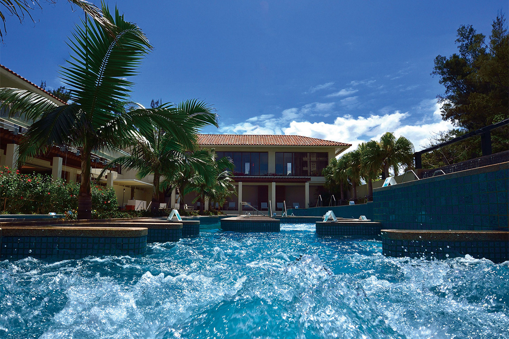
На севере острова Окинава, на мысе Бусэна, с 2011 года работает отель, который с первого дня задумывали ради здоровья гостей. Сюда приезжают за талассотерапией, хорошим сном и привычками, которые потом можно увезти домой.
Таласса
Утро у моря
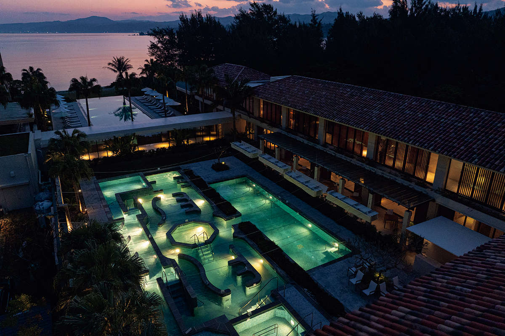
Небо светлеет и становится сиреневым, на его фоне качаются силуэты пальмовых листьев, и сразу понятно, что ты проснулся на юге. Голова ясная, тело лёгкое. Наверное, так крепко спится, потому что красивый пляж и талассотерапия действуют заодно.
Талассотерапию придумали во Франции. Это лечение морем: морской водой, водорослями, морской грязью и самим морским климатом. Считается, что минералы из морской воды, которые человек получает через дыхание и кожу, помогают настроить вегетативную нервную систему и укрепить иммунитет.
Отель The Terrace Club Wellness Thalasso at Busena открылся в 2011 году и с самого начала строился как курорт для здоровья, на тёплом климате и природе Окинавы. Многие гости возвращаются сюда снова и снова.
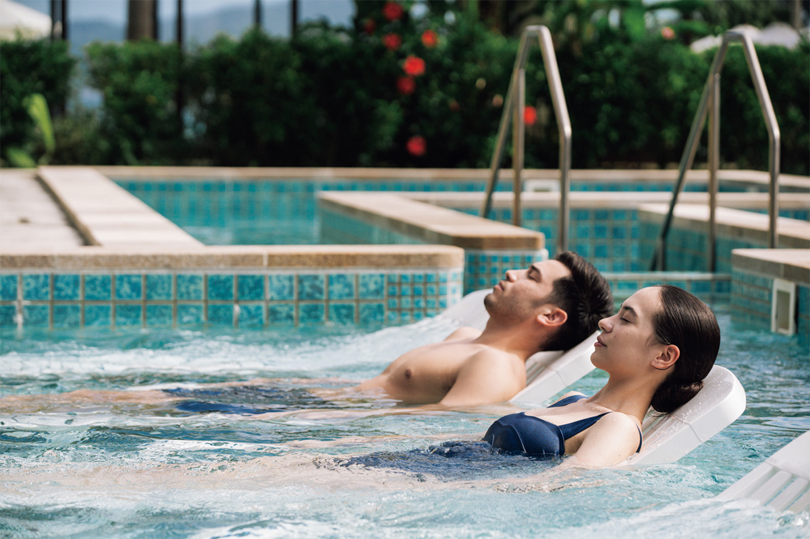
Начинать знакомство с отелем лучше всего с талассопула. Проходить его зоны стоит не спеша, около часа, подставляя тело под струи воды. Морская вода держит сама: стоит расслабиться, и ты уже лежишь на спине и смотришь в небо. Покачиваешься вместе с облаками, мышцы отпускает, и в голове становится пусто.
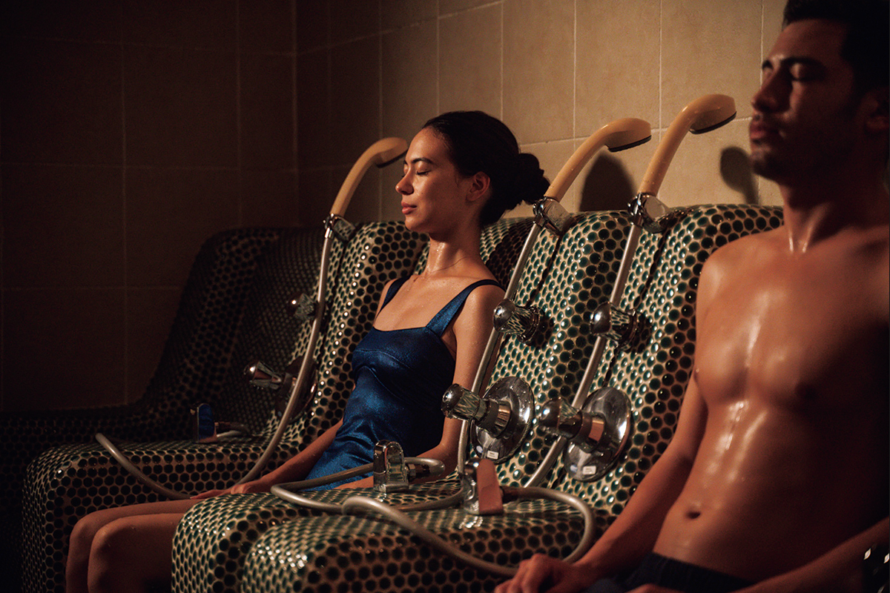
Номера
Только клубные этажи
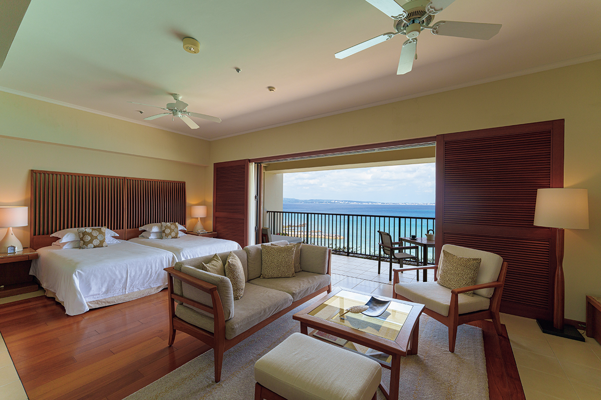
После бассейна хорошо прилечь на дневную кровать в номере и смотреть, как меняется цвет моря. В лаунже с библиотекой и баром днём подают сладости к чаю, а в час аперитива, под живое фортепиано и негромкий гул голосов, можно взять шампанское или крафтовое пиво.
Отель принимает гостей только с 13 лет. В нём 68 номеров, и все они относятся к клубным этажам. Через распахнутые окна доносится только тихий шум волн и мягкий морской ветер.
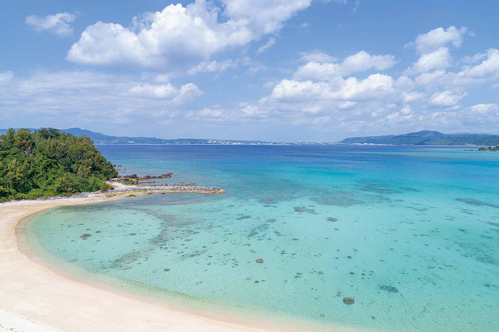
Талассопулом отдых здесь не ограничивается. В меню больше 30 процедур: йога, растяжка, уход за головой, процедуры для тела и лица. Каждый выбирает то, что нужно именно ему.
Программы
Движение, еда и отдых
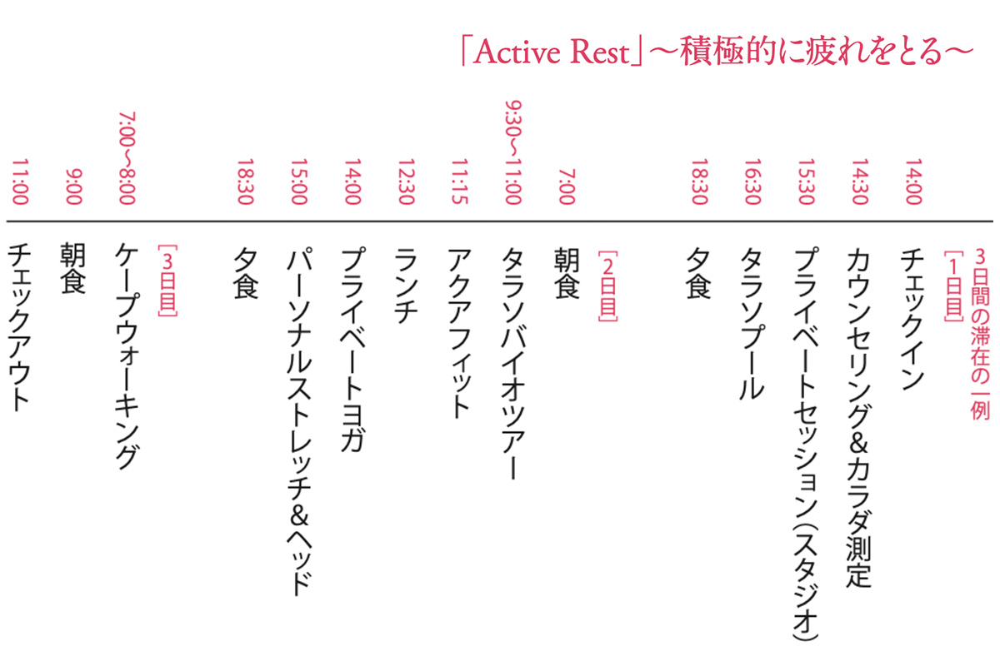
Процедуры и питание здесь собирают в многодневные программы, где уравновешены движение, питание и отдых. Кроме «Активного отдыха» есть «Хороший сон», который помогает наладить сон, «Здоровая жизнь», выравнивающая ритм дня, и другие: всего пять программ под разные заботы. Минимальный срок три дня и две ночи.
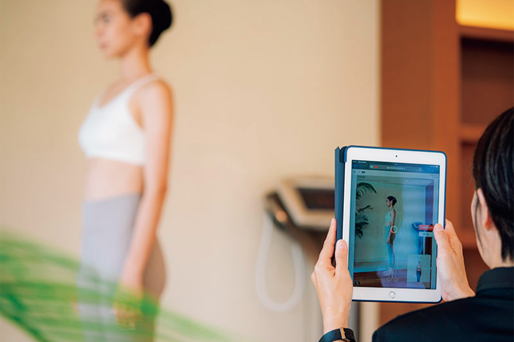
Всё начинается с консультации, чтобы понять, в каком состоянии тело. Гостя расспрашивают о привычной нагрузке, питании и сне, а специалисты, среди которых инструкторы по оздоровительной физкультуре и диетологи, подбирают каждому интенсивность занятий и меню под его организм.
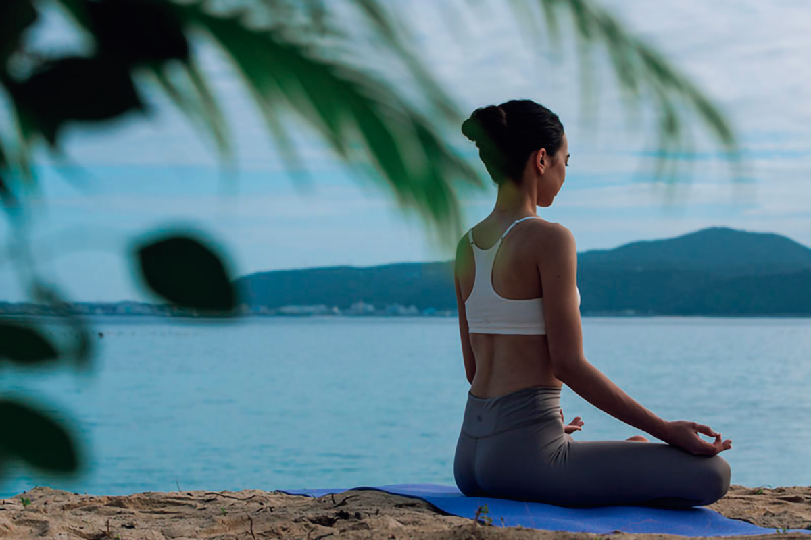
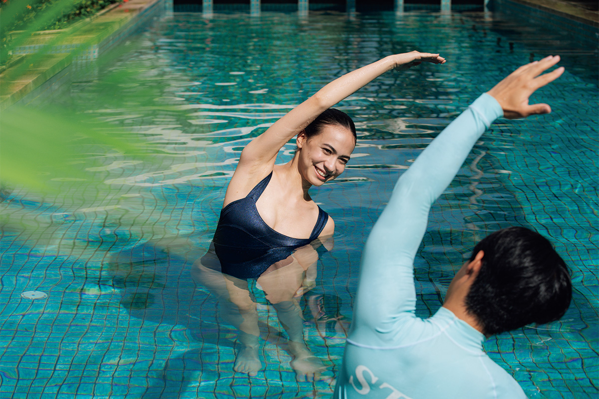
Если плохо спится, можно попробовать несколько подушек, которые посоветуют специалисты. Блюда готовят в паре инструктор и шеф: продукты, способ приготовления и размер порции подбирают под конкретного гостя. Такое внимание к мелочам возможно как раз потому, что отель небольшой.
Кухня
Рюкюская кухня на 800 ккал
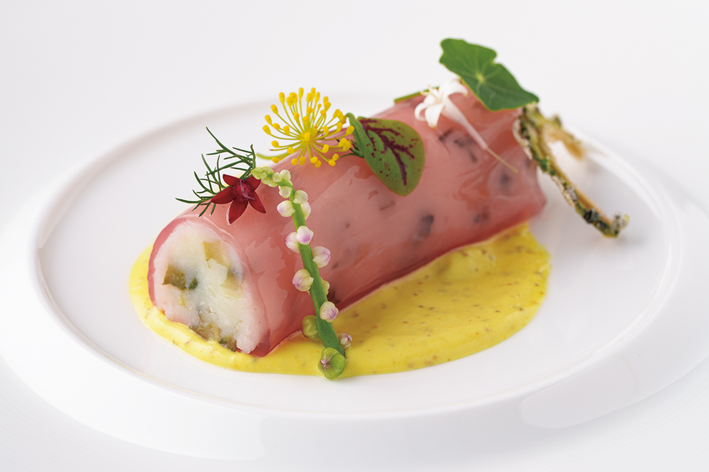
Основа меню это овощи без пестицидов с фермы отелей той же группы. Шеф соединяет опыт рюкюской кухни, которую считают едой долгожителей, со знаниями о лечебном питании и превращает окинавские продукты в яркие и ни на что не похожие блюда. Мясо и рыбу тоже готовят, но подбирают части и способы так, чтобы еда оставалась сытной и при этом лёгкой. Полный ужин укладывается в 800 ккал. Рецепт можно спросить: здесь охотно делятся, чтобы гость и дома ел правильно.
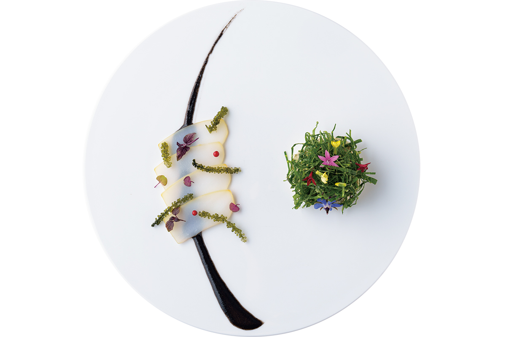
Главное для отеля это равновесие между телом и душой. Если на время отпуска отказаться от алкоголя и мяса и изнурять себя тренировками, это вовсе не обязательно пойдёт на пользу. Здесь иначе: роскошь курорта наполняет душу, а гость получает подсказки, как улучшить своё состояние, и увозит их в обычную жизнь. В основе всего желание, чтобы гости и через пять, и через десять лет жили здоровыми.
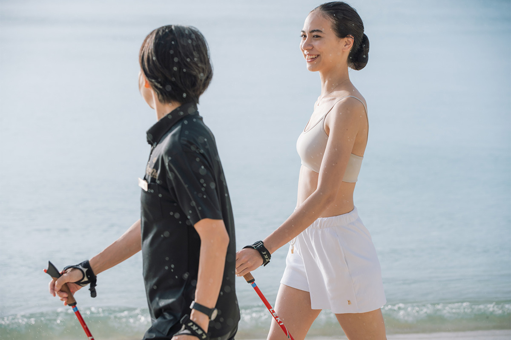
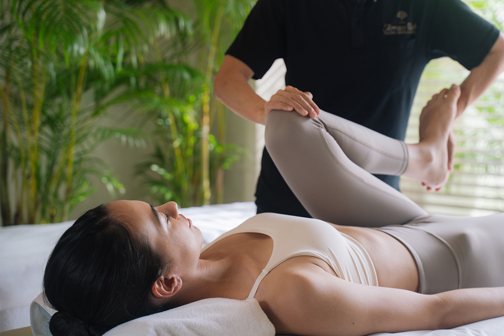
Тёплый круглый год климат Окинавы, оснащение, которому мало равных в Японии, и сотрудники, которые встречают гостей с материнской заботой. Сюда хочется возвращаться снова, чтобы вдали от суеты дать отдых уставшим телу и голове.
Ночь с завтраком в 2026 году стоила от 33 000 иен, программа «Активный отдых» на три дня и две ночи с ужинами и завтраками от 142 180 иен на человека при размещении вдвоём, с налогом и сервисным сбором.
The Terrace Club Wellness Thalasso at Busena
- Адрес
- префектура Окинава, Наго, Кисэ, 1750
- Телефон
- +81 980-51-1113
- Номера
- 68
- Заезд / выезд
- 14:00 / 11:00
- Цены / Вход
- ночь с завтраком от 33 000 иен; программа «Активный отдых», 3 дня и 2 ночи с ужином и завтраком, от 142 180 иен на человека при размещении вдвоём (с налогом и сервисным сбором); гости от 13 лет
- Как добраться
- на машине около 5 минут от развязки Кёда скоростной дороги Окинава; из аэропорта Наха ходит бесплатный автобус, бронь до 18:00 накануне
Фото: Ацуси Ямахира.